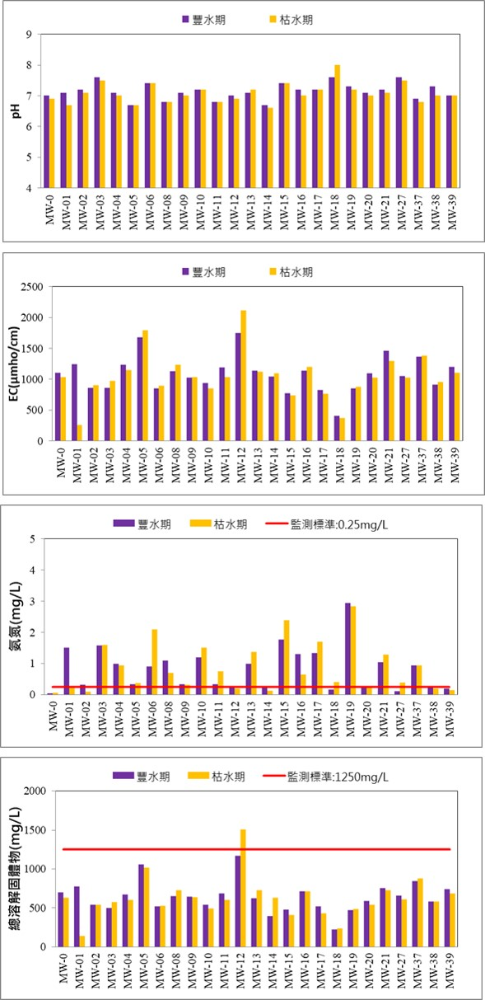
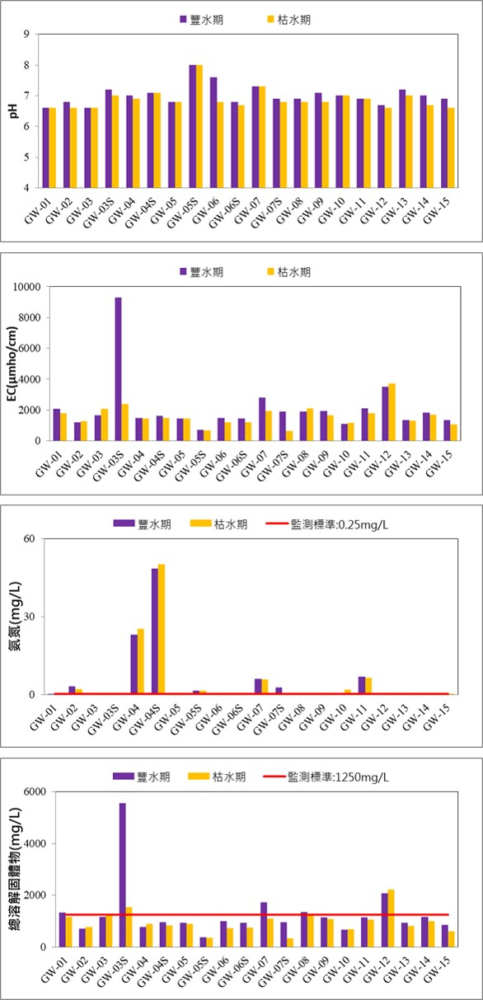

國家科學及技術委員會南部科學園區管理局定期會針對轄區地下水質進行監測工作，監測頻率為豐、枯水期各1次，監測項目除包括一般水質項目外，尚包含地下水污染監測標準與管制標準所列之項目（不含農業類）。
由於南部科學園區開發前之基地長期為農業用途，因此於環評期間即監測到此區地下水質富含氨氮、總溶解固體物質、總有機碳等項目，長期地下水質監測趨勢亦與環評時期相仿，無太大差異。
以下圖示臺南園區近期(110年豐、枯水期)地下水質監測結果，以供參考：
以下圖示高雄園區近期(110年豐、枯水期)地下水質監測結果，以供參考：
